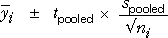

Taking account of unexplained variation
The best estimate of the mean response at each factor level is the corresponding sample mean,

However point estimates give no indication of the accuracy of the estimates, so 95% confidence intervals are often reported to give a better indication of randomness caused by unexplained variability in the experiment.
Confidence intervals
It would be possible to independently calculate 95% confidence intervals using the means and standard deviations for each factor level,

However since we assume that the standard deviation is the same for all factor levels, it is better to use the pooled estimate of the common standard deviation for all confidence intervals. Since the pooled estimate is based on all the data, it is more accurate and the confidence intervals are narrower. When the pooled estimate of the standard deviation is used, the t-value in the formula should use the residual degrees of freedom — the sum of those at the different individual levels. The t-value is therefore smaller (reflecting the increased accuracy of the estimate).

The confidence intervals are often displayed graphically, as shown in the diagram below.
Comparing varieties of wheat
The diagram below simulates the wheat yields in an experiment involving four varieties of wheat. There are initially 3 replicates for all varieties.
The 95% confidence intervals are initially calculated using the separate means and standard deviations for each variety, and they are shown as blue rectangles in the diagram. Note that they vary in width since the sample standard deviations are (by chance) different.
Select the checkbox Use pooled standard deviation to use the same standard deviation for all varieties. Note that all all confidence intervals now have the same width and are (on average) narrower.
Repeat with more replicates. Observe that there is little difference between the two formulae when the number of replicates is high.